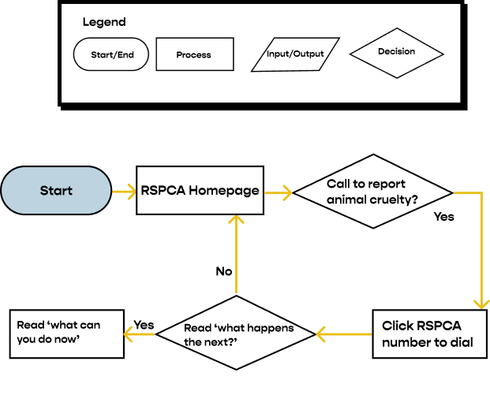
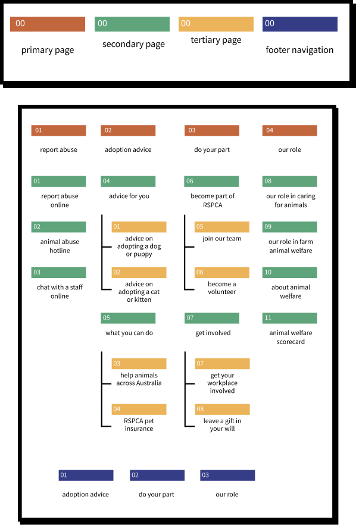
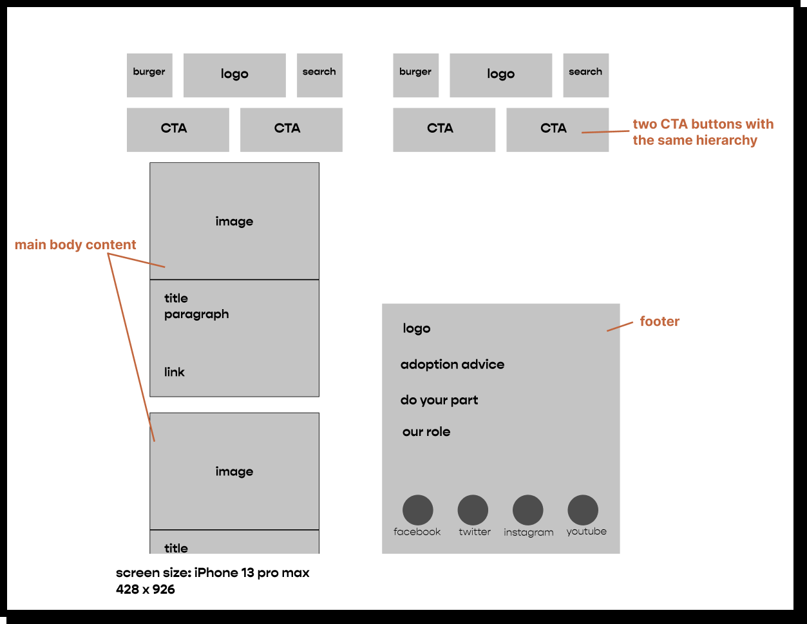
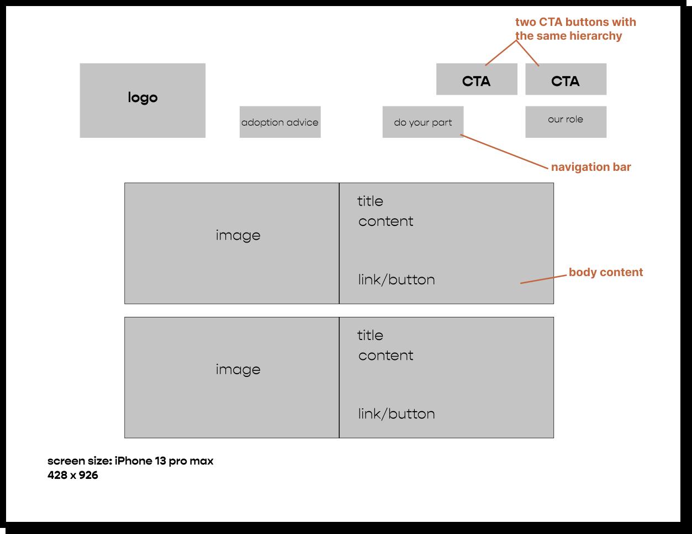

The RSPCA is an independent, community-based charity that provides animal care and protection services across the country. This project aimes to build a meaningful user interface from a clear and deliberate brand voice for RSPCA Australia website to provide an impactful and intuitive way to solve animal welfare related issues.
Rebranding and reimagining how users interact with the RSPCA website when it comes to rescuing injured animals and witnessing animal cruelty.
1. 3 weeks
2. research & user analysis
3. ideation, information archietecture & wireframing
4. prototyping & user testing
Providing users with better guidance and structure for navigating support resources.
1. Project manager
2. UX researcher
3. UX designer
4. UI designer
According to RSPCA Australia National Statistics 2020-2021, each year between 2015 and 2021 in Australia, an average of over 63,390 animal cruelty complaints were made.
RSPCA Victoria, which receives the vast majority of complaints, emphasised during consultation that their primary goal is to promote the welfare of animals, and that this is often best achieved through providing assistance and education.
However, based on the previous personal experience of reporting finding an injured bird to RSPCA Victoria, the process was confusing and challenging.
The goal with this project was to research, redesign, and reimagine how users experience reporting animal abuse to RSPCA Australia. Emphasis was on responsive web design, branding, customer journey mapping, and strategic thinking.
To create an online experience that will allow users to simply locate the right assistance at the right moment and to easily find support resources and information.
Develop a coherent brand with the client and user in mind.
Introduce features developed from user research: Contact information and important support resources easy to find.
How might we create an online experience that allows users to feel empowered and confident without feelings of overwhelm or frustrate?
Therefore, I conducted 5 user interviews with people I know who experienced reporting lost/injured animals in Australia before, getting to know what difficulties they’ve confronted and what they’re looking for while contacting the animal welfare services.
-Interview guide
-Online survey
- To not feel so overwhelmed by information and resources.
- The ability to achieve goals with help for insight and guidance.
- To find the contact information instantly without clicking any buttons.
- Clear guidance to their wanted destination.
- To not waste time feeling confused in the website.
- To be able to filter easily and efficiently through overwhelming catogeries.
- An organized, efficient experience where users won’t get lost and frustrated knowing where they are.
- To feel empowered to make a decision.
- Contact located up top to allow quick needed info.
- To know the service is part of their community and cares about their users.
- To feel empowered to choose a method to report an animal abuse, instead of feeling defeated that they don’t know enough to animal welfare.
We analysed 2 competitors in the market:
PetRescue
WIRES Australian Wildlife Rescue Organisation
Things we could learn from competitors:
Our users are looking for a reliable and accurate way to be able to report lost and injured animals and suspicion of animal abuse.
Our users have spent a considerable amount of time trying to locate contact information for the RSPCA website and are frustrated at the lack of prompt responses received from RSPCA. This situation causes stress for both staff and users who are in need of this information in a timely manner.
These are the improvements we aim to make:
In order to have a bird-eye view of the product a user flow was performed to attempt to meet users’ goals.
Card sorting helped us find out what users think about the content. That's why we organised our content in this way to suit users' mental models, in a way creating better usability for the product.
Sketch based on the user flow to try to solve users’ pain points while looking for contact info.
 